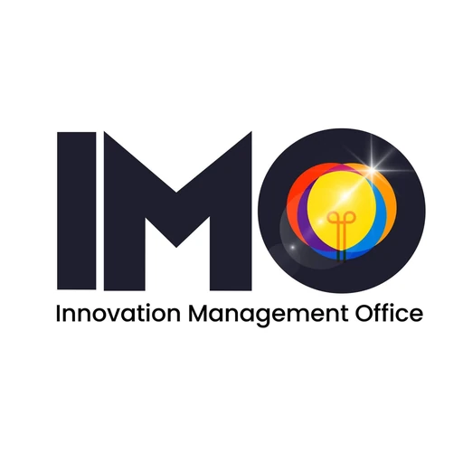

DOST-NEUST TBI
Nueva Ecija University of Science & Technology · Region III
DOST-NEUST TBI is a Technology Business Incubator hosted by the Nueva Ecija University of Science and Technology (NEUST) at its Sumacab Campus in Cabanatuan City, Nueva Ecija, Region III (Central Luzon). Operating alongside the university's Innovation Management Office (IMO) and Innovation and Technology Support Office, it nurtures technology-based startups and helps students and researchers turn ideas into market-ready prototypes and enterprises.
- Category
- Technology Business Incubator
- Host institution
- Nueva Ecija University of Science & Technology
- City
- Cabanatuan City
- Region
- Region III
- Operating status
- Operating
About the Center
The center is one of the incubators established under the DOST-Philippine Council for Industry, Energy, and Emerging Technology Research and Development (PCIEERD) Higher Education Institution Readiness for Innovation and Technopreneurship (HEIRIT) program. It regularly runs innovation and entrepreneurship activities such as "From Idea to Prototype" bootcamps and the annual Teknovation Expo, fostering a culture of technopreneurship in the region.
Programs & Services
- Business Incubation Program — Structured support developing technology-based startups into sustainable enterprises.
- Pre-Incubation & Ideation — Early-stage guidance helping students and innovators turn ideas into prototypes.
- Innovation & Entrepreneurship Bootcamps — Seminar-workshops such as "From Idea to Prototype" that build technopreneurial skills.
- Teknovation Expo — Showcase events connecting startup innovations with industry, government, and the community.
- Mentoring & Advisory — Coaching from mentors, technical experts, and business advisors.
- Prototyping & Technology Support — Innovation and technology support services for product development.
- DOST-PCIEERD Grant & Funding Linkage — Assistance in accessing DOST seed funding and startup grants.
- Market & Network Linkage — Connections to markets, local governance support, and the innovation ecosystem.
Contact
Sources & references
- dostneusttbi.wixsite.com/dost-neust-tbi
- neust.edu.ph/2025/03/26/imo-and-dost-neust-tbi-ignite-innovation-3rd-teknov…
- neust.edu.ph/2026/07/06/in-photos-neust-breaks-ground-for-technology-busine…
Details are drawn from public records and the sources above, July 2026.
Startupreneur Innovation Hub · synced from the Notion catalog (July 2026) · status: published.